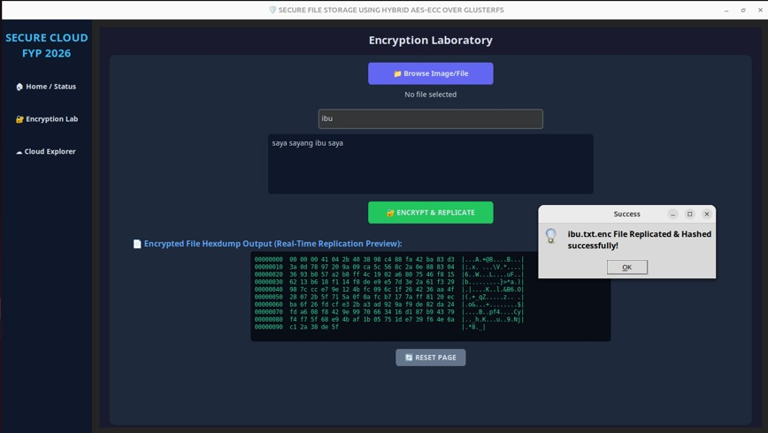
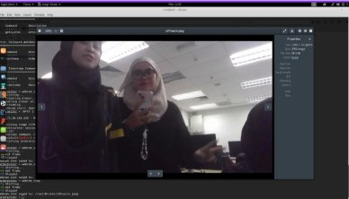
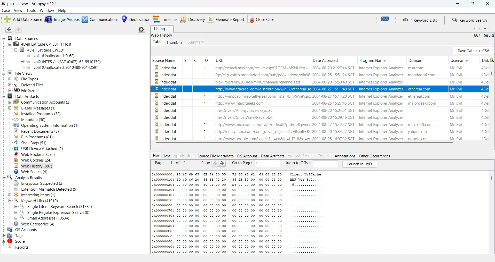
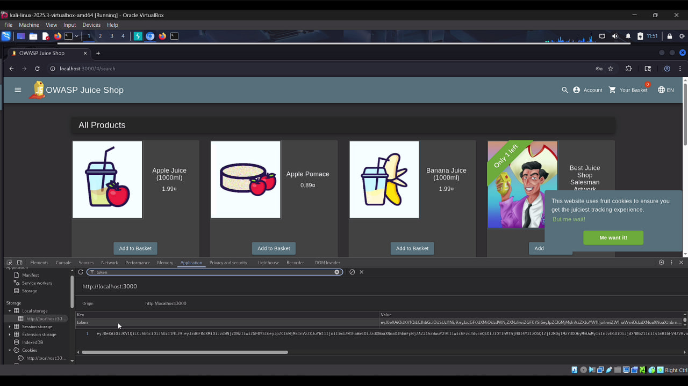
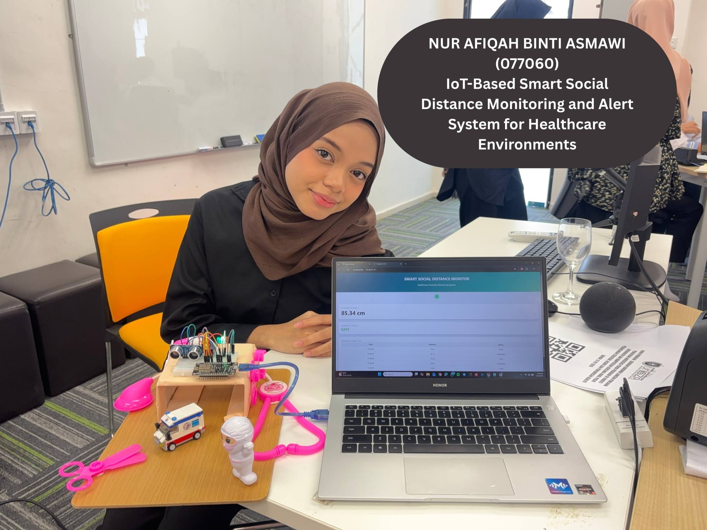

AFIQAH
.SEC
01 // Home
02 // Career
03 // Skills
04 // Projects
05 // Roadmap
06 // Evidence
07 // Reflection
[ CONNECT ]
PROJECT EXECUTION DECK
Operations //
[ SECURITY METRICS ]





1 / 5
Telemetry Data
Back to Skills
Next Section: Roadmap